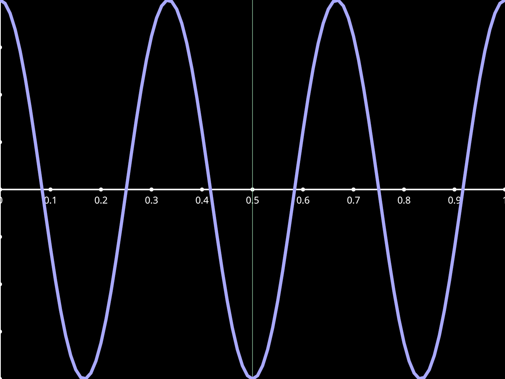

Tsd#
import pynapple as nap
import uviz as viz
print(tsd)
Time (s)
---------- --------
0.0 1
0.01 0.982287
0.02 0.929776
0.03 0.844328
0.04 0.728969
0.05 0.587785
0.06 0.425779
...
1.93 0.24869
1.94 0.425779
1.95 0.587785
1.96 0.728969
1.97 0.844328
1.98 0.929776
1.99 0.982287
dtype: float64, shape: (200,)
PlotTsd#
v = viz.PlotTsd(tsd)
v.show()

PlotTsd - add_interval_sets#
v = viz.PlotTsd(tsd)
v.add_interval_sets(epochs= index start end
0 0.25 0.4
1 0.7 0.8
shape: (2, 2), time unit: sec.)
v.show()